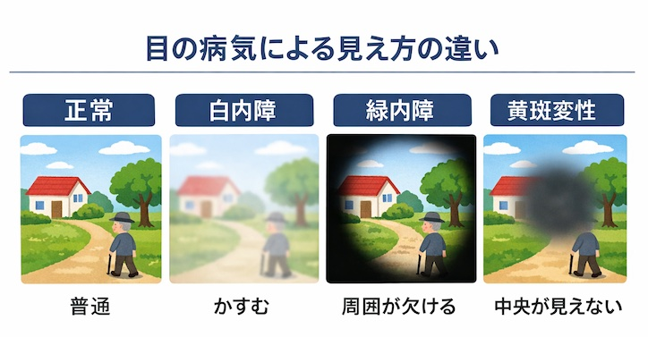

公開日：2026年4月｜最終更新；2026年5月
第１章 視力低下は転倒と認知症のリスクになる
「目が弱ると、体の元気も失われます！」
視力低下 → 外出減少
つづいて、外出減少 → 筋力低下・社会的孤立
結果的に、孤立・活動量低下 → フレイル・認知症リスク上昇
結局「目の健康＝全身の健康」なのです。
これは、「栄養」、「筋肉」、「脳、認知症」などのこのホームページの内容とつながり、
見落とされがちですが、重要テーマです。
第２章 白内障・緑内障・加齢黄斑変性の違い
「年をとると起こりやすい３つの目の病気」は、次の通りです。
- 白内障：かすむ、まぶしい
- 緑内障：視野が欠ける
- 加齢黄斑変性：中心が見えにくい

第３章 目（視力）を守る生活習慣
「目を守る５つの習慣」は、次の通りです。
- 適度な運動（血流改善）
- バランスのよい食事（緑黄色野菜や魚を食べる）（第４章へ）
- 強い紫外線を避ける
- 年１回は眼科受診
- 外に出て遠くを見る
屋外で運動するときは、サングラスを使用しましょう。偏光タイプや、茶色・グレー色のレンズが見やすいとされています。ただし、濃すぎるレンズは目からの情報量を減らすため、日常の散歩では薄めのものを選びましょう。（最後に「おまけ」として、「サングラスとスポーツの関係」をまとめています）
コメント：
サングラスは濃ければよいわけではありません。光を遮りすぎると、周囲の状況が見えにくくなり、判断力が低下することがあります。散歩や軽い運動では、グレーや茶色の中程度の濃さのレンズが安全です。参考文献１）
第４章 目と栄養（特に重要）
「目に良い栄養素」として次のものがあります。
- ルテイン・ゼアキサンチン（緑黄色野菜）
- DHA・EPA（青魚）
- ビタミンA・C・E
- 亜鉛
コラム：栄養素の働き
ルテインやゼアキサンチンは、光のダメージから目を守ります。
DHAやEPAは、網膜の細胞の働きを保ちます。
ビタミンA・C・Eは抗酸化作用で目の老化を防ぎます。
ビタミンB12は視神経の健康に関係します。
亜鉛はビタミンAの働きを助けます。
第５章 スマホ・テレビと高齢者の目
「近くばかり見る生活」は目と体の元気を奪います。
- 近くばかり見ている生活
- 瞬き減少 → ドライアイ
- 外に出る時間減少 → 活動量低下
これらは、目の機能の衰えを引き起こす行為ですので、家に閉じこもらず、積極的に外出しましょう。
第６章 目薬の効果
- 目薬は1回1滴で十分
- 防腐剤の少ないタイプを選ぶ
- 充血用目薬の長期使用は避ける
- 処方薬は自己判断で中止しない
コメント：
充血用目薬には、血管収縮剤が入っていますので、長期間使用は帰って症状を悪化させます。「血管収縮剤、ナファゾリン、テトラヒドロゾリン、フェニレフリン」などの表示には注意が必要です。
高齢者に薦めたい「安全な目薬の使い方」：
「１回１滴で十分」「回数を守る」「充血用目薬の長期使用は避ける」「処方薬は勝手にやめない」「目の異常が続けば眼科で診察する」などです。症状によって、必要な目薬は違うため、自己判断せず、眼科医の指示を守ることが大切です。
第７章 花粉症対策の市販目薬の注意
- 抗アレルギー薬タイプ：長期使用も基本安全
- 血管収縮剤タイプ：長期使用は推奨されない
個人的コメント：
花粉シーズンでは、「就寝中に目を触る癖」が起こりやすく、角膜やまぶたを傷つけたり、眼球に余計な圧をかけたりすることになります。抗アレルギー薬でその行為が減れば、むしろ目の保護に役立っています。
第８章 まとめ
目の健康を守ることは、外に出て体を動かし、人と関わる生活につながります。それがフレイルと認知症の予防につながります。
おまけ：スポーツ別おすすめサングラス
| スポーツ |
おすすめ |
理由 |
| 散歩・日常 |
薄め～中程度のグレー・茶色 |
自然な色で見え、状況判断しやすい |
| ジョギング・サイクリング |
偏光レンズ・中程度の濃さ |
反射光を抑え、視認性向上 |
| テニス・球技 |
茶色系・中程度 |
距離感を保ちやすい |
レンズの色の特徴
| 色 |
特徴 |
向いている活動 |
| グレー |
色の変化が少ない |
散歩・運転 |
| ブラウン |
コントラスト向上 |
テニス・ゴルフ |
| グリーン |
バランス型 |
長時間の屋外活動 |
| 濃い黒系 |
光を大きく減らす |
強い日差しの環境 |